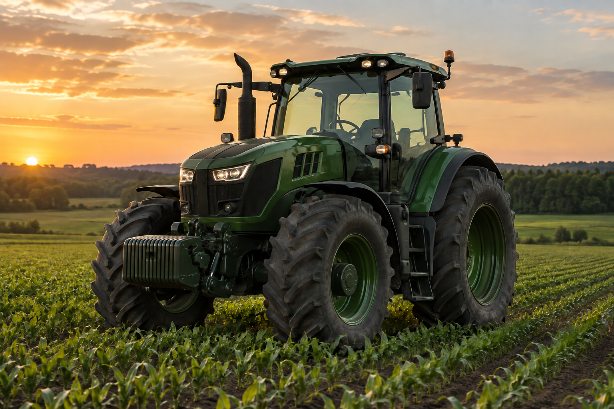

Paradas inesperadas
Uma falha interrompe as tarefas que dependem daquele equipamento.
AGROSENSE / MONITORAMENTO DE MÁQUINAS
A proposta da AgroSense reúne leituras de sensores e machine learning para ajudar a equipe a perceber mudanças no funcionamento das máquinas.
Veja a proposta Como funciona
PAINEL ILUSTRATIVO · AG-01O DESAFIO
Desgaste, alterações de funcionamento e falhas mecânicas nem sempres são visíveis Quando o problema aparece tarde, o impacto vai além da máquina..
Uma falha interrompe as tarefas que dependem daquele equipamento.
Uma falha percebida tarde pode aumentar o custo da manutenção.
Sem acompanhar as leituras, alterações podem passar despercebidas até a próxima inspeção.
Quando um equipamento fica indisponível, a equipe precisa rever tarefas e prazos.
A SOLUÇÃO
A proposta combina leituras de sensores, análise automatizada e alertas para ajudar a equipe a avaliar mudanças no funcionamento das máquinas.
O caminho dos dados
Os sensores previstos medem condições de operação, como temperatura, torque e rotação.
A proposta prevê transmitir as leituras em tempo real para o sistema.
O modelo de machine learning analisa as leituras e sinaliza possíveis desvios do padrão.
A equipe consulta indicadores, histórico e alertas para avaliar a máquina e planejar a manutenção.
VISÃO GERAL
Consulte as leituras atuais, compare o histórico e veja quais situações precisam ser avaliadas.
Máquinas e indicadores no mesmo painel.
Compare registros anteriores com a condição atual.
Confira quais leituras saíram do padrão.
CAPACIDADES
A equipe consulta leituras, histórico e alertas ao avaliar cada equipamento.
Acompanhe as leituras para identificar mudanças nas condições de operação.
Ajuda a equipe a identificar possíveis anomalias e planejar uma intervenção.
Analisa as leituras e aponta possíveis comportamentos fora do padrão.
Consulte leituras anteriores ao avaliar a condição atual da máquina.
Sinaliza leituras fora do padrão para avaliação da equipe.
Reúne indicadores, equipamentos e resultados das análises.
TECNOLOGIA
Ferramentas para simular sensores, transmitir leituras e analisar os dados.
Simula as leituras dos sensores durante o desenvolvimento.
Transporta mensagens entre os componentes do sistema.
Recebe e distribui as mensagens MQTT.
Linguagem do backend.
Organiza os serviços e as regras do backend.
Usado para treinar o modelo de machine learning.
Formato usado para integrar o modelo de machine learning ao sistema.
Guarda leituras, análises e alertas.
PARA QUEM
A proposta atende quem opera as máquinas, cuida da manutenção e planeja o trabalho.
Consultam as condições do equipamento durante a operação.
Usam leituras e alertas para avaliar o equipamento e planejar a manutenção.
Acompanham indicadores e o histórico dos equipamentos ao planejar a operação.
A EQUIPE
Quatro integrantes desenvolvem o projeto AgroSense.
DESENVOLVIMENTO
Desenvolvedor
Ver portfólioDESENVOLVIMENTO
PM / Desenvolvedora
Ver portfólioDESENVOLVIMENTO
Líder / PO / Desenvolvedor
Ver portfólio
DESENVOLVIMENTO
Tech Lead / Desenvolvedora
Ver portfólioAcompanhar leituras das máquinas pode ajudar a equipe a planejar a manutenção.